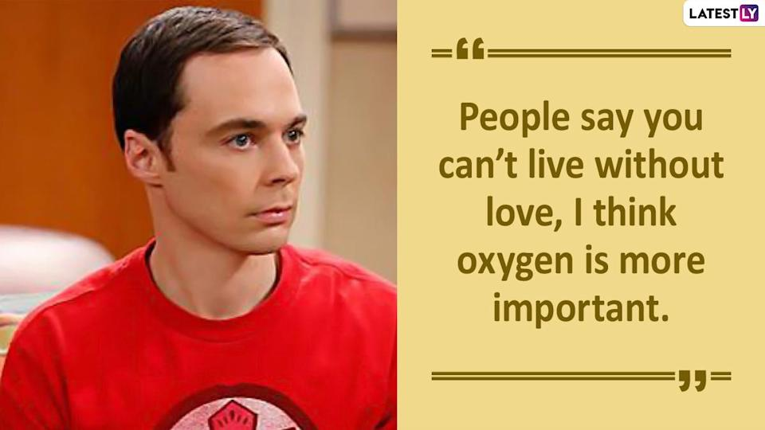
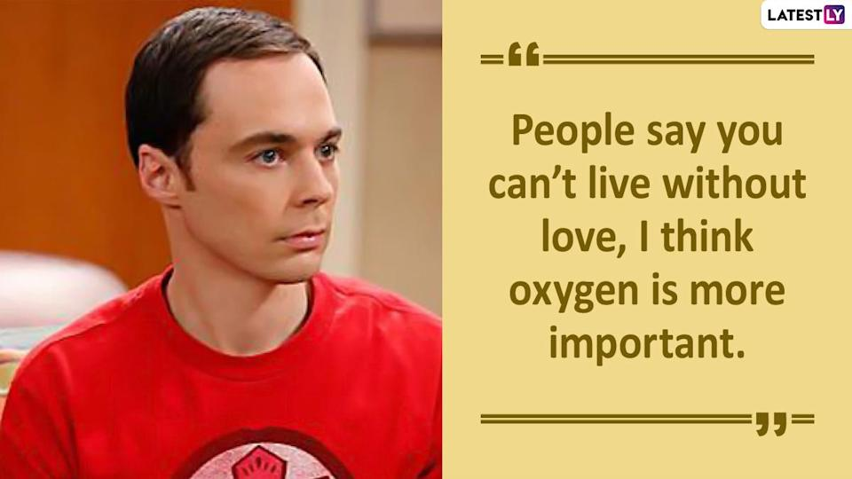

IQ and EQ
What is Emotional Intelligence?
How is it different to IQ?
People can have a high IQ and a low EQ and history know many geniuses who had low EQ. A good example here would be a fictional character Sheldon Cooper from the tv series Big Bang Theory - a genius who can not recognize sarcasm or understand why and when people feel sad, happy or angry.
 

It is funny because it is true
During the show, other characters help Sheldon to develop his EQ and it gives hope to all people with a low EQ who don’t believe they can actually deliberately improve their EQ.
Why is it important?
3/07/2022